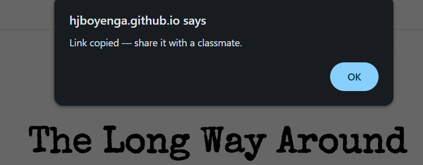

Usability Results
Overall, testing went well. Participants found the project simple to understand and easy to follow from start to finish. The choose-your-own-adventure format resonated with people, and the branching structure felt intuitive. That said, a few patterns emerged across sessions that are worth addressing before the final build.
Several participants paused or re-read certain questions before answering. The confusion was most noticeable on the 2nd question and the 7th question on the freelance route. The intent was clear in context, but the phrasing itself wasn't landing cleanly.
ContentThe share functionality works, but it currently triggers a plain browser pop-up that feels disconnected from the rest of the page. Participants noticed the visual break. Styling it to match the site's aesthetic would make the experience feel more cohesive and intentional.
UI / StylingA few participants noted the questions felt a bit abstract. Framing them with a scenario makes a real difference, instead of "How do you deal with rejection?", opening with "You just got fired from your first job, how do you respond?" pulls the reader in and makes the stakes feel real.
Narrative
Participants consistently picked up the format quickly with minimal explanation. The branching logic felt natural, and nobody got lost navigating through the questions. The minimalist visual approach kept the focus on the content without creating distraction.
Before the final version, the plan is to reword questions 2 and 7 on the freelance track, add a custom-styled share modal that fits the page's look and feel, and go through the full question set to inject more scenario-based framing throughout, especially for questions that deal with high-stakes moments like rejection, career pivots, or choosing between stability and risk.